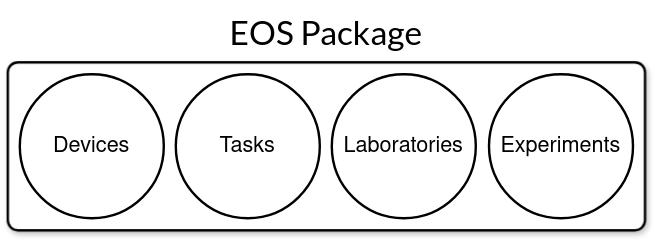
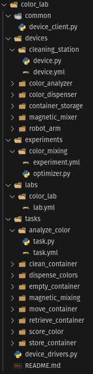

Packages#
Code and resources in EOS are organized into packages, which are discovered and loaded at runtime. Each package is essentially a folder. These packages can contain laboratory, device, task, and protocol definitions, code, and data, allowing reuse and sharing. For example, a package can contain task and device implementations for equipment from a specific manufacturer, while another package may only contain protocols that run on a specific lab.

Using a package is as simple as placing it in a directory that EOS loads packages from. By default, this directory is called user and is located in the root of the EOS repository.
Below is the directory tree of an example EOS package called “color_lab”. It contains a laboratory called “color_lab”, the “color_mixing” protocol, and various devices and tasks. The package also contains a device client under common, and a README file.
{kind=link}

Create a Package#
eos pkg create my_package
This command is a shortcut to create a new package with all subdirectories. Feel free to delete subdirectories you don’t expect to use.
Add Entities to a Package#
You can scaffold new labs, devices, tasks, and protocols inside an existing package with the
eos pkg add subcommands. Each one creates the directory under the correct entity folder and
seeds it with empty starter files.
eos pkg add lab my_package my_lab # creates labs/my_lab/lab.yml
eos pkg add device my_package my_device # creates devices/my_device/{device.yml, device.py}
eos pkg add task my_package my_task # creates tasks/my_task/{task.yml, task.py}
eos pkg add protocol my_package my_proto # creates protocols/my_proto/{protocol.yml, optimizer.py}
Install Package Dependencies#
Each package declares its Python dependencies in its pyproject.toml. The install command
is a thin wrapper around uv pip install -r <package>/pyproject.toml that resolves each
package by name (even if it is nested inside a subdirectory under user/).
eos pkg install my_package # install deps for one package
eos pkg install my_package other_package # install deps for several packages
eos pkg install --all # install deps for every discovered package
Any flag-style arguments (and everything after them) are forwarded verbatim to uv pip install.
Use -- if you need to pass a flag that EOS itself interprets (for example, --help):
eos pkg install my_package --upgrade
eos pkg install my_package --index-url https://my.registry/simple
eos pkg install my_package -- --help # show uv's help instead of eos's
Dependencies are installed into the active environment and are therefore shared across every EOS package — EOS must be able to import user packages from the same interpreter.
Configuring the User Directory#
All eos pkg commands resolve the user directory in the following order:
--user-dir/-uflag (explicit override).user_dirfield in the config file pointed at by--config/-c(default:./config.yml).Fallback:
./user.